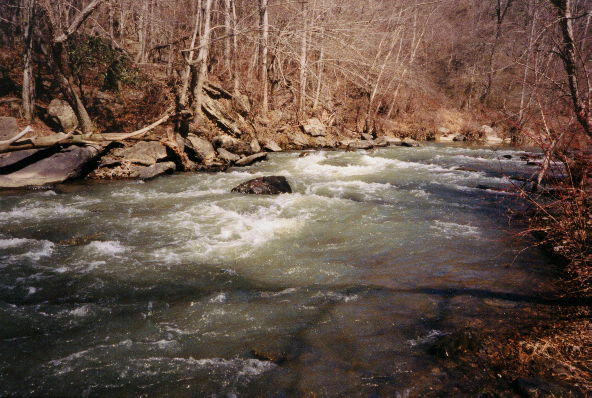
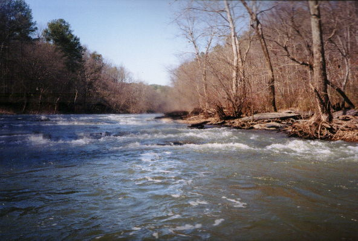
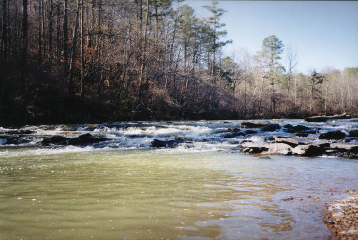
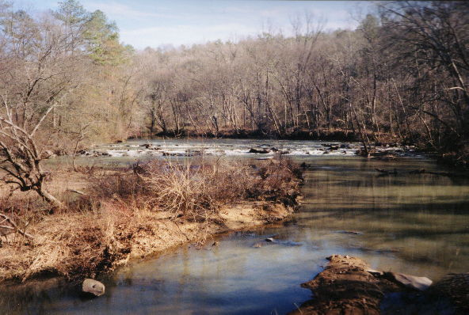

Cahaba River - Lovick to Grants Mill

The first rapid on the bend to the left. All of these pictures are at quite a low water level (~200 cfs at Mountain Brook).

Another wide rapid with a nice camera water drop.

Send water!

The last rapid from a distance.